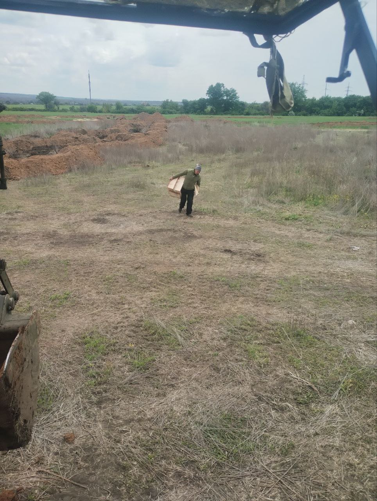
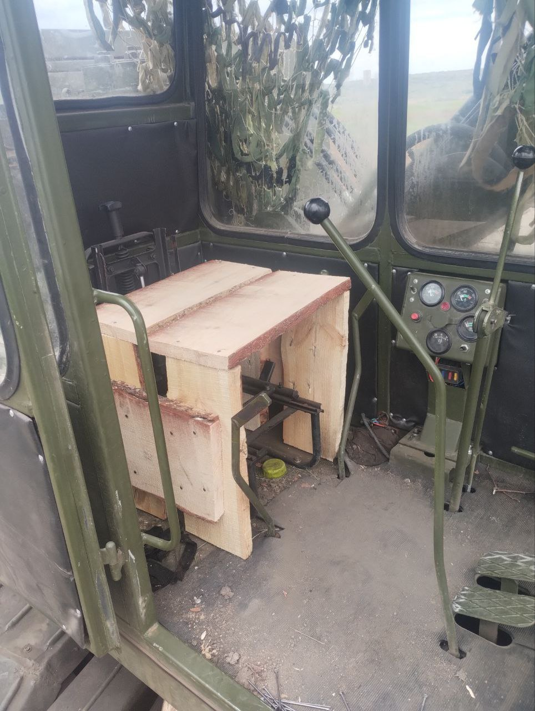
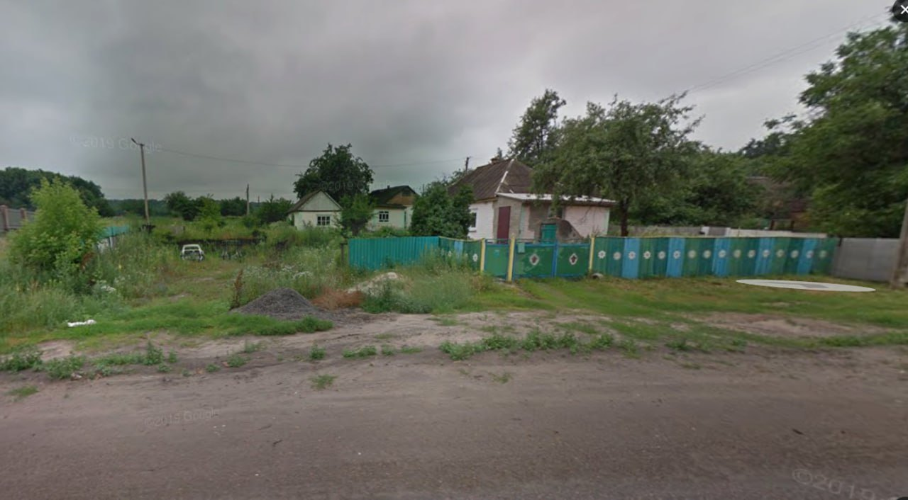
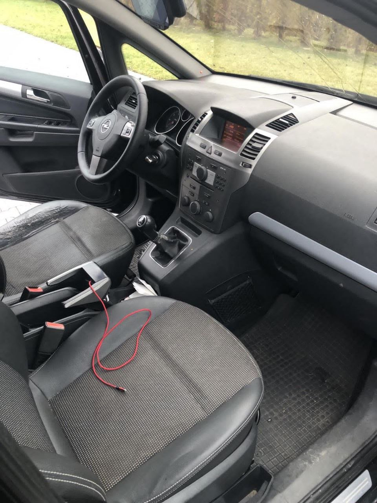
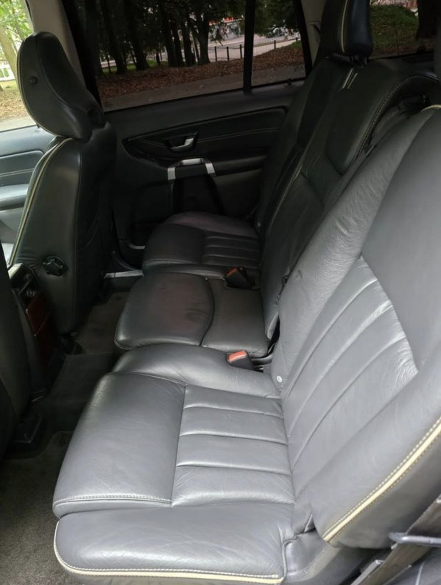
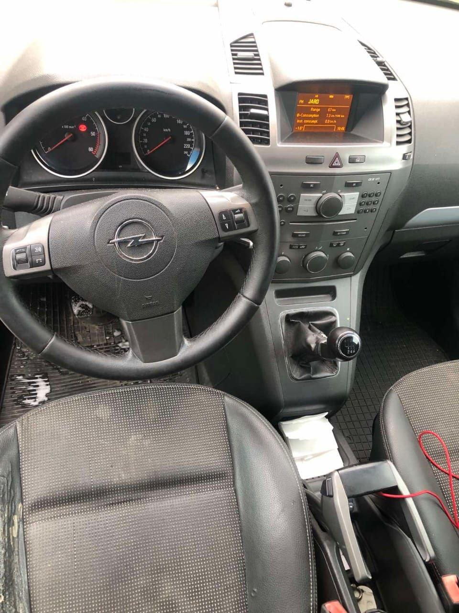
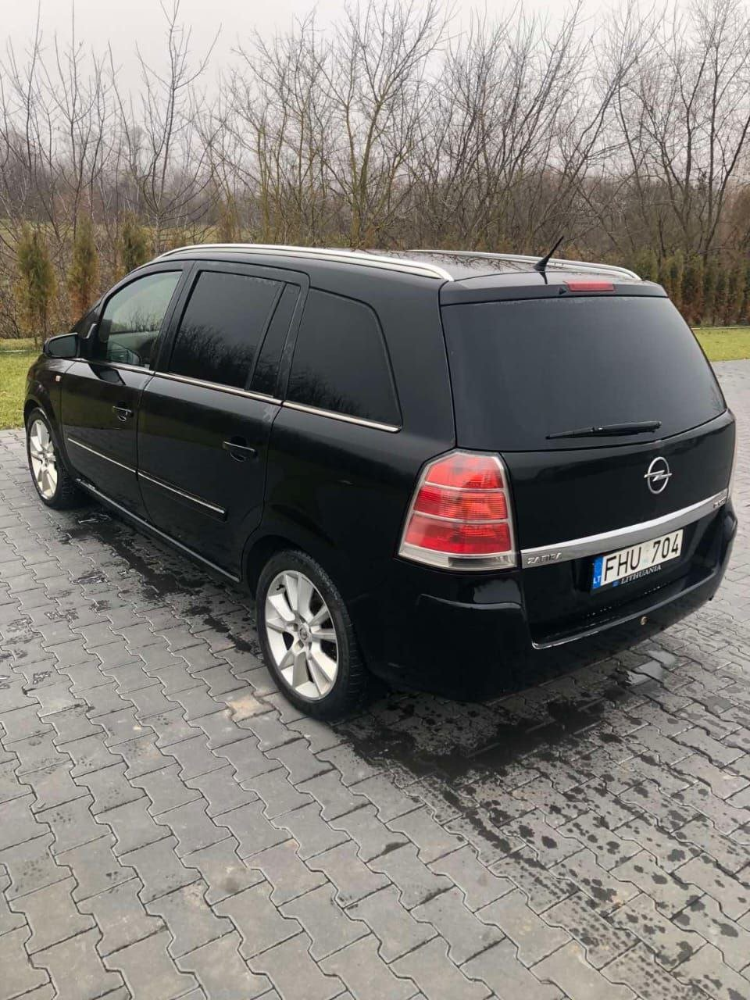

Історія трьох машин
Хронологія — з фотографій, які Ігор надсилав власнику збору. Нічого прикрасити не довелося.
Машина №1 · весна 2024
Daewoo Nexia — куплена на кошти людей
Перший збір зібрали звичайні люди. Нексія возила людей і вантажі, поки в неї не влетіла ракета. Машину знищено.

Машина №1 · Daewoo Nexia

Народний збір у роботі
Машина №2
Передана родичами
Рідні допомогли машиною, щоб Ігор не залишився без коліс. Фотографій не збереглося. У неї влучив ворожий дрон.
Машина №3 · дизель 1.9, 2006 · 7 грудня 2024
Купив за власні кошти — накрив «Іскандер»
Третю машину Ігор купив сам, без жодного збору. Після удару не лишилось ані машини, ані речей — усе, що було в салоні, згоріло.
Жива

Після удару




Машина №4 · цей збір
Четверта — спільна
Ігор знову на позиціях, знову без авто. Цього разу машина буде спільною — від усіх, хто долучиться. Кожна гривня публічна: скріни баночки щотижня, чеки на покупку, фото передачі.
Донатити на баночку